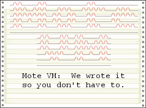

Mote VM is a byte-code compiler written in a cross platform Javascript and should be usable on any modern complete browser. (At the time this code was written, IE6 was considered a modern browser.)
See it in action here